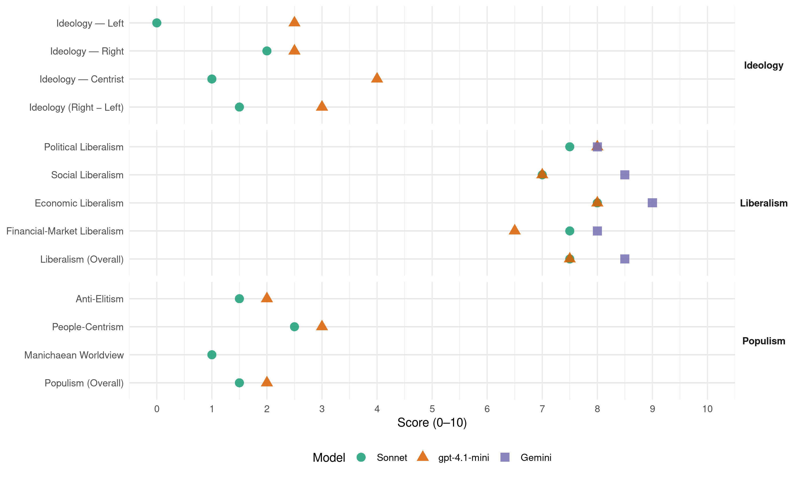

H (Norway, 1961)
manifesto_id 12620_196109
Get full text: This site shows derived annotations and short verbatim quotes only. The full manifesto text is © Manifesto Project / WZB — obtain it via manifesto-project.wzb.eu using the manifesto_id above.
Headline scores
| Dimension | Sonnet | gpt-4.1-mini | Gemini |
|---|---|---|---|
| Populism (Overall) | 1.5 | 2.0 | – |
| Anti-Elitism | 1.5 | 2.0 | – |
| People-Centrism | 2.5 | 3.0 | – |
| Manichaean Worldview | 1.0 | – | – |
| Ideology (Right − Left) | 1.5 | 3.0 | – |
| Liberalism (Overall) | 7.5 | 7.5 | 8.5 |
| Political Liberalism | 7.5 | 8.0 | 8.0 |
| Social Liberalism | 7.0 | 7.0 | 8.5 |
| Economic Liberalism | 8.0 | 8.0 | 9.0 |
| Financial-Market Liberalism | 7.5 | 6.5 | 8.0 |
Evidence per dimension
Economic Liberalism
Gemini · score 9.0 · verified · chunk 1
“åpen konkurranse og frivillig samarbeid”
Eiendomsretten gir det enkelte menneske mulighet til å vinne trygghet og sikkerhet for seg og sine. I åpen konkurranse og frivillig samarbeid har dette inspirert til innsats
Gemini · score 9.0 · verified · chunk 2
“avskaffer statsdirigering og regulering”
at man letter beskatningen, at man avskaffer statsdirigering og regulering, at man oppmuntrer kapitaldannelsen
gpt-4.1-mini · score 8.0 · verified · chunk 1
“Det er sunn, åpen konkurranse, fri omsetning og frivillig samarbeid som har ført til den sterke økonomiske fremgang”
Det er sunn, åpen konkurranse, fri omsetning og frivillig samarbeid som har ført til den sterke økonomiske fremgang i vårt land, og i verden forøvrig i de siste hundre år.
gpt-4.1-mini · score 8.0 · verified · chunk 2
“lettelse av beskatningen, avskaffelse av statsdirigering og regulering, oppmuntring til kapitaldannelse og frihandel”
Det vil si at man bremser inflasjonen som undergraver bedriftenes evne til å stå imot ugunstige konjunkturer, at man letter beskatningen, at man avskaffer statsdirigering og regulering, at man oppmuntrer kapitaldannelsen, og at man sørger for kraft, kommunikasjoner og rikelig tilgang på velutdannet arbeidskraft.
Sonnet · score 8.0 · verified · chunk 1
“sunn, åpen konkurranse, fri omsetning”
Det er sunn, åpen konkurranse, fri omsetning og frivillig samarbeid som har ført til den sterke økonomiske fremgang
Sonnet · score 8.0 · verified · chunk 2
“avskaffer statsdirigering og regulering”
at man bremser inflasjonen som undergraver bedriftenes evne til å stå imot ugunstige konjunkturer, at man letter beskatningen, at man avskaffer statsdirigering og regulering, at man oppmuntrer kapitaldannelsen
Financial-Market Liberalism
Gemini · score 8.0 · verified · chunk 1
“bevegelig rente som et av de mange virkemidler”
Høire går derfor inn for en bevegelig rente som et av de mange virkemidler i den økonomiske politikk. Ved forsvarlig
Gemini · score 8.0 · verified · chunk 2
“styrke de private låneinstitusjoner”
er det nødvendig at man foruten Statens Fiskarbank også styrker de private låneinstitusjoner i fiskeridistriktene, slik at de
gpt-4.1-mini · score 7.0 · verified · chunk 1
“Høire vil derfor legge forholdene til rette for at utenlandsk kapital kan bli investert i Norge”
I dagens situasjon er en kapitaltilførsel utenfra en forutsetning for den økonomiske vekst vi ønsker. Høire vil derfor legge forholdene til rette for at utenlandsk kapital kan bli investert i Norge, etter en konkret vurdering av de enkelte tilfelle,
gpt-4.1-mini · score 6.0 · verified · chunk 2
“Det må legges til rette for at fylkene, kommunene og industrien kan skaffe seg langsiktige lån til kraftutbygging”
Staten bør legge forholdene til rette for at fylkene, kommunene og industrien kan skaffe seg langsiktige lån til kraftutbygging. Flest mulig, men særlig den kraftkrevende storindustri, tillates og oppmuntres til selv å finansiere utbyggingen.
Sonnet · score 8.0 · verified · chunk 1
“bevegelig rente som et av de mange virkemidler”
Høire går derfor inn for en bevegelig rente som et av de mange virkemidler i den økonomiske politikk.
Sonnet · score 7.0 · verified · chunk 2
“hindre tilgang på risikovillig kapital”
MAN MÅ DERFOR VÆRE VARSOM MED BESTEMMELSER OG REGULERINGSORDNINGER SOM KAN HINDRE TILGANG PÅ RISIKOVILLIG KAPITAL.
Political Liberalism
Gemini · score 8.0 · verified · chunk 1
“frie, demokratiske institusjoner”
nasjonale og kulturelle tradisjon og i frie, demokratiske institusjoner. I tider da de ytre livsforhold
Gemini · score 8.0 · verified · chunk 2
“konsesjonsbetingelser som fastsettes av Stortinget”
ved all kraftutbygging må dessuten utbyggingskommunene - ved de konsesjonsbetingelser som fastsettes av Stortinget i form av reguleringsavgifter
gpt-4.1-mini · score 8.0 · verified · chunk 1
“frie, demokratiske institusjoner”
Folket vil stå best rustet til å møte et nytt tideverv når det har funnet en fast forankring i kristne og moralske grunnverdier, i sin nasjonale og kulturelle tradisjon og i frie, demokratiske institusjoner.
gpt-4.1-mini · score 8.0 · verified · chunk 2
“demokrati, rettssikkerhet, frie valg, og parlamentarisme må sikres”
Det er avgjørende at demokrati, rettssikkerhet, frie valg, og parlamentarisme må sikres for å opprettholde et fritt samfunn.
Sonnet · score 8.0 · verified · chunk 1
“frie, demokratiske institusjoner”
i sin nasjonale og kulturelle tradisjon og i frie, demokratiske institusjoner. I tider da de ytre livsforhold forandrer seg
Sonnet · score 7.0 · verified · chunk 2
“fritt valg av yrke- og arbeidssted”
Høire vil ikke godkjenne noen innskrenkninger i retten til fritt valg av yrke- og arbeidssted, og tar bestemt avstand fra enhver form for tvangsdirigering av mennesker ved særlover eller på annen måte.
Liberalism (Overall)
Gemini · score 8.0 · verified · chunk 1
“åpen konkurranse og frivillig samarbeid”
Eiendomsretten gir det enkelte menneske mulighet til å vinne trygghet og sikkerhet for seg og sine. I åpen konkurranse og frivillig samarbeid har dette inspirert til innsats
Gemini · score 9.0 · verified · chunk 2
“avskaffer statsdirigering og regulering”
at man letter beskatningen, at man avskaffer statsdirigering og regulering, at man oppmuntrer kapitaldannelsen
gpt-4.1-mini · score 8.0 · verified · chunk 1
“Folket vil stå best rustet til å møte et nytt tideverv når det har funnet en fast forankring i kristne og moralske grunnverdier”
En konservativ grunntanke er at aktiv fremskrittspolitikk må bygge på det som er sterkt og sunt i samfunnet. Folket vil stå best rustet til å møte et nytt tideverv når det har funnet en fast forankring i kristne og moralske grunnverdier,
gpt-4.1-mini · score 7.0 · verified · chunk 2
“lettelse av beskatningen, avskaffelse av statsdirigering og regulering, oppmuntring til kapitaldannelse og frihandel”
Det vil si at man bremser inflasjonen som undergraver bedriftenes evne til å stå imot ugunstige konjunkturer, at man letter beskatningen, at man avskaffer statsdirigering og regulering, at man oppmuntrer kapitaldannelsen, og at man sørger for kraft, kommunikasjoner og rikelig tilgang på velutdannet arbeidskraft.
Sonnet · score 8.0 · verified · chunk 1
“sunn, åpen konkurranse, fri omsetning”
Det er sunn, åpen konkurranse, fri omsetning og frivillig samarbeid som har ført til den sterke økonomiske fremgang
Sonnet · score 7.0 · verified · chunk 2
“konkurranse betyr sløseri”
Ingen mener lenger at kapitalen er en fiende, eller at konkurranse betyr sløseri. Idag trenger friskere idéer igjennom.
Anti-Elitism
gpt-4.1-mini · score 2.0 · verified · chunk 1
“motarbeide ethvert forsøk på å sette de politiske partier under utilbørlig press”
vil Høire motarbeide ethvert forsøk på å sette de politiske partier under utilbørlig press for å påvirke partienes, og derigjennom indirekte de folkevalgte organers virksomhet.
gpt-4.1-mini · score 2.0 · verified · chunk 2
“Få mennesker tror ennå på statsmonopoler og reguleringspolitikk. Ingen mener lenger at kapitalen er en fiende”
Tiden har løpt fra sosialismens idéer. Få mennesker tror ennå på statsmonopoler og reguleringspolitikk. Ingen mener lenger at kapitalen er en fiende, eller at konkurranse betyr sløseri. Idag trenger friskere idéer igjennom.
Sonnet · score 2.0 · verified · chunk 1
“den halv-sosialistiske periode etter krigen”
Også i den halv-sosialistiske periode etter krigen har Høire hevdet, at dette er nødvendig for at vårt næringsliv
Sonnet · score 1.0 · verified · chunk 2
“Tiden har løpt fra sosialismens idéer”
Tekniske og økonomiske fremskritt kan ikke i seg selv gi vårt folk en lykkelig fremtid. Tiden har løpt fra sosialismens idéer. Få mennesker tror ennå på statsmonopoler og reguleringspolitikk.
Ideology — Centrist
gpt-4.1-mini · score 4.0 · verified · chunk 1
“Selveier-demokratiets tanke anviser her både midler og mål for vårt arbeid”
Eiendomsretten gir det enkelte menneske mulighet til å vinne trygghet og sikkerhet for seg og sine. I åpen konkurranse og frivillig samarbeid har dette inspirert til innsats fra den enkelte og til fremgang for samfunnet. Selveier-demokratiets tanke anviser her både midler og mål for vårt arbeid.
gpt-4.1-mini · score 4.0 · verified · chunk 2
“En kraftig og aktiv politikk har en enestående chanse til å gjøre årene som kommer til en rik tid, hvor trivsel og trygghet gir bedre grobunn”
Tekniske og økonomiske fremskritt kan ikke i seg selv gi vårt folk en lykkelig fremtid. Men slike fremskritt kan legge et grunnlag. En kraftig og aktiv politikk har en enestående chanse til å gjøre årene som kommer til en rik tid, hvor trivsel og trygghet gir bedre grobunn for medmenneskelighet, ansvarsfølelse og kulturell vekst.
Sonnet · score 1.0 · verified · chunk 1
“hele folket være med på sparingen”
MED VÅRE DAGERS JEVNE VELSTAND MÅ HELE FOLKET VÆRE MED PÅ SPARINGEN OM DEN SKAL FÅ ET OMFANG SOM MONNER
Sonnet · score 1.0 · verified · chunk 2
“frigjøring av byggende krefter”
Idag trenger friskere idéer igjennom. Det blir stadig klarere at tiden krever en frigjøring av byggende krefter, under våken og ansvarsbevisst samfunnsledelse.
Ideology — Left
gpt-4.1-mini · score 3.0 · verified · chunk 1
“skatt som er sosial, SOM LETTER BYRDENE FOR DEM SOM MINST ER ISTAND TIL Å BÆRE DEM”
Høire går inn for en skattepolitikk som er sosial, SOM LETTER BYRDENE FOR DEM SOM MINST ER ISTAND TIL Å BÆRE DEM, OG SOM TRYGGER LØNNSTAKERNES ARBEIDSPLASSER.
gpt-4.1-mini · score 2.0 · verified · chunk 2
“Tiden har løpt fra sosialismens idéer. Få mennesker tror ennå på statsmonopoler og reguleringspolitikk”
Tiden har løpt fra sosialismens idéer. Få mennesker tror ennå på statsmonopoler og reguleringspolitikk. Ingen mener lenger at kapitalen er en fiende, eller at konkurranse betyr sløseri. Idag trenger friskere idéer igjennom.
Sonnet · score 0.0 · verified · chunk 2
“avskaffer statsdirigering og regulering”
at man bremser inflasjonen som undergraver bedriftenes evne til å stå imot ugunstige konjunkturer, at man letter beskatningen, at man avskaffer statsdirigering og regulering, at man oppmuntrer kapitaldannelsen
Ideology (Right − Left)
gpt-4.1-mini · score 3.0 · verified · chunk 1
“Selveier-demokratiets tanke anviser her både midler og mål for vårt arbeid”
Eiendomsretten gir det enkelte menneske mulighet til å vinne trygghet og sikkerhet for seg og sine. I åpen konkurranse og frivillig samarbeid har dette inspirert til innsats fra den enkelte og til fremgang for samfunnet. Selveier-demokratiets tanke anviser her både midler og mål for vårt arbeid.
gpt-4.1-mini · score 3.0 · verified · chunk 2
“Tiden har løpt fra sosialismens idéer. Få mennesker tror ennå på statsmonopoler og reguleringspolitikk. Ingen mener lenger at kapitalen er en fiende”
Tiden har løpt fra sosialismens idéer. Få mennesker tror ennå på statsmonopoler og reguleringspolitikk. Ingen mener lenger at kapitalen er en fiende, eller at konkurranse betyr sløseri. Idag trenger friskere idéer igjennom.
Sonnet · score 2.0 · verified · chunk 1
“kristne og moralske grunnverdier”
fast forankring i kristne og moralske grunnverdier, i sin nasjonale og kulturelle tradisjon og i frie, demokratiske
Sonnet · score 1.0 · verified · chunk 2
“Ingen mener lenger at kapitalen er en fiende”
Få mennesker tror ennå på statsmonopoler og reguleringspolitikk. Ingen mener lenger at kapitalen er en fiende, eller at konkurranse betyr sløseri.
Ideology — Right
gpt-4.1-mini · score 2.0 · verified · chunk 1
“i sin nasjonale og kulturelle tradisjon og i frie, demokratiske institusjoner”
Folket vil stå best rustet til å møte et nytt tideverv når det har funnet en fast forankring i kristne og moralske grunnverdier, i sin nasjonale og kulturelle tradisjon og i frie, demokratiske institusjoner.
gpt-4.1-mini · score 3.0 · verified · chunk 2
“bønder og bygder må styrkes økonomisk og kulturelt. Det må vernes om kulturminnesmerker fra gammel tid”
VÅR OPPGAVE IDAG ER Å STYRKE BYGDENE ØKONOMISK OG KULTURELT. Det må gis tilstrekkelig støtte til tiltak som kan øke bygdesamfunnets kulturelle muligheter, som bygging av samfunnshus (som, hvor det er mulig, må kunne gi plass for Riksteatret), utbygging av bibliotekvesenet og av idrettsanlegg o. l. Det må vernes om kulturminnesmerker fra gammel tid – kirkebygninger, gamle gårder, gravhauger osv.
Sonnet · score 2.0 · verified · chunk 1
“kristne og moralske grunnverdier”
fast forankring i kristne og moralske grunnverdier, i sin nasjonale og kulturelle tradisjon og i frie, demokratiske
Sonnet · score 2.0 · verified · chunk 2
“verne om kulturminnesmerker fra gammel tid”
Det må vernes om kulturminnesmerker fra gammel tid – kirkebygninger, gamle gårder, gravhauger osv.
Manichaean Worldview
Sonnet · score 1.0 · verified · chunk 1
“sosialistisk styre”
Kommunenes handlefrihet er blitt vesentlig innskrenket under sosialistisk styre, ved at staten har pålagt kommunene
Sonnet · score 1.0 · verified · chunk 2
“Ingen mener lenger at kapitalen er en fiende”
Få mennesker tror ennå på statsmonopoler og reguleringspolitikk. Ingen mener lenger at kapitalen er en fiende, eller at konkurranse betyr sløseri.
People-Centrism
gpt-4.1-mini · score 3.0 · verified · chunk 1
“Folket vil stå best rustet til å møte et nytt tideverv”
En konservativ grunntanke er at aktiv fremskrittspolitikk må bygge på det som er sterkt og sunt i samfunnet. Folket vil stå best rustet til å møte et nytt tideverv når det har funnet en fast forankring i kristne og moralske grunnverdier,
gpt-4.1-mini · score 3.0 · verified · chunk 2
“En kraftig og aktiv politikk har en enestående chanse til å gjøre årene som kommer til en rik tid, hvor trivsel og trygghet gir bedre grobunn for medmenneskelighet”
Tekniske og økonomiske fremskritt kan ikke i seg selv gi vårt folk en lykkelig fremtid. Men slike fremskritt kan legge et grunnlag. En kraftig og aktiv politikk har en enestående chanse til å gjøre årene som kommer til en rik tid, hvor trivsel og trygghet gir bedre grobunn for medmenneskelighet, ansvarsfølelse og kulturell vekst.
Sonnet · score 3.0 · verified · chunk 1
“hele folket være med på sparingen”
MED VÅRE DAGERS JEVNE VELSTAND MÅ HELE FOLKET VÆRE MED PÅ SPARINGEN OM DEN SKAL FÅ ET OMFANG SOM MONNER
Sonnet · score 2.0 · verified · chunk 2
“en kraftig og aktiv politikk”
En kraftig og aktiv politikk har en enestående chanse til å gjøre årene som kommer til en rik tid, hvor trivsel og trygghet gir bedre grobunn for medmenneskelighet
Populism (Overall)
gpt-4.1-mini · score 2.0 · verified · chunk 1
“motarbeide ethvert forsøk på å sette de politiske partier under utilbørlig press”
vil Høire motarbeide ethvert forsøk på å sette de politiske partier under utilbørlig press for å påvirke partienes, og derigjennom indirekte de folkevalgte organers virksomhet.
gpt-4.1-mini · score 2.0 · verified · chunk 2
“Få mennesker tror ennå på statsmonopoler og reguleringspolitikk. Ingen mener lenger at kapitalen er en fiende”
Tiden har løpt fra sosialismens idéer. Få mennesker tror ennå på statsmonopoler og reguleringspolitikk. Ingen mener lenger at kapitalen er en fiende, eller at konkurranse betyr sløseri. Idag trenger friskere idéer igjennom.
Sonnet · score 2.0 · verified · chunk 1
“den halv-sosialistiske periode etter krigen”
Også i den halv-sosialistiske periode etter krigen har Høire hevdet, at dette er nødvendig for at vårt næringsliv
Sonnet · score 1.0 · verified · chunk 2
“Tiden har løpt fra sosialismens idéer”
Tekniske og økonomiske fremskritt kan ikke i seg selv gi vårt folk en lykkelig fremtid. Tiden har løpt fra sosialismens idéer. Få mennesker tror ennå på statsmonopoler og reguleringspolitikk.
Social Liberalism